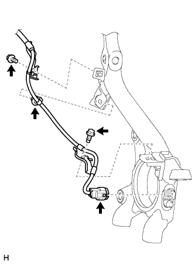
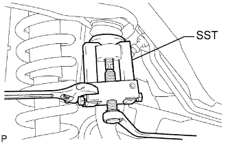
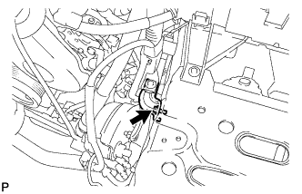

ПЕРЕДНИЙ ВЕРХНИЙ РЫЧАГ ПОДВЕСКИ > СНЯТИЕ |
| 1. СНИМИТЕ ПЕРЕДНЕЕ КОЛЕСО |
| 2. СНИМИТЕ ПРОВОД ДАТЧИКА СИСТЕМЫ ПРОТИВОСКОЛЬЖЕНИЯ |
|  |
Отсоедините разъем от переднего датчика частоты вращения.
Выверните 2 болта и снимите 2 зажима жгута проводов.
Освободите фиксатор.
 |
Выверните 2 болта и снимите 2 зажима жгута проводов.
Отсоедините разъем следующим образом.
| *A | Для левой стороны | *B | Для правой стороны |
Для левой стороны:
Для правой стороны:
| 3. СНИМИТЕ ЛЕВЫЙ ВЕРХНИЙ РЫЧАГ ПЕРЕДНЕЙ ПОДВЕСКИ В СБОРЕ |
|  |
Поддомкратьте левый нижний рычаг передней подвески.
Снимите фиксатор и отверните гайку.
С помощью SST отсоедините верхний шаровой шарнир от поворотного кулака.
|  |
Выверните болт и отсоедините кронштейн.
 |
Выверните болт, отверните гайку и снимите 2 шайбы.
Снимите верхний рычаг передней подвески в сборе.